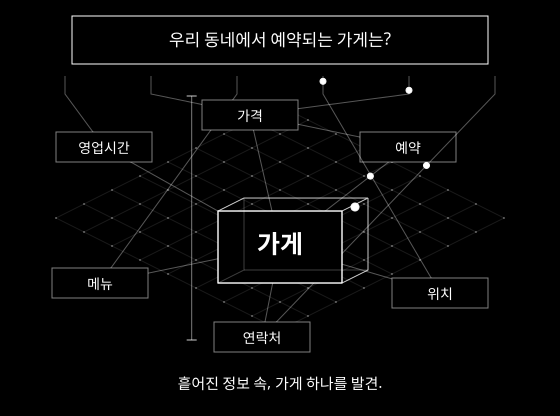

ChatGPT
언급 1번째예약 방법과 영업시간을 안내한 예시카페를 확인해 보세요.
ChatGPT는 우리 가게를 알고 있을까요?
홈페이지를 만들고, 검색과 AI 답변에 필요한 정보를 정리합니다. 이미 사이트가 있으면 빠진 내용부터 고칩니다. 사이트와 도메인, 측정 원본은 사장님께 남깁니다.
사이트가 없어도 가게 이름으로 신청하실 수 있습니다.
신청 문구가 복사되고 인스타그램이 열립니다. DM에 붙여넣어 보내주세요. 진단은 무료입니다.
여섯 AI 타일이 흩어진 점들을 차례로 훑으며 가게를 찾습니다.
아래는 설명을 위해 만든 예시입니다. 실제 AI 답변이 아닙니다.
우리 동네에서 예약할 수 있는 카페 알려줘
예약 방법과 영업시간을 안내한 예시카페를 확인해 보세요.
주변 카페의 영업시간과 예약 가능 여부를 먼저 확인해 보세요.
홈페이지에서 위치와 예약 방법을 볼 수 있는 예시카페가 있습니다.
방문할 날짜와 인원을 정한 뒤 카페에 예약 가능 여부를 문의해 보세요.
0개월 약정
월 관리는 한 달씩 결제합니다.
선납도 없습니다.
아래 병원 질문 조사에서 ChatGPT와 Gemini는 병원 홈페이지를 많이 인용했습니다. 네이버 AI 브리핑은 블로그 비중이 더 컸습니다. 그래서 홈페이지를 고칠 때 네이버 플레이스의 영업 정보도 함께 맞춥니다.
| AI | 병원 홈페이지를 인용한 비율 | 네이버 블로그를 인용한 비율 |
|---|---|---|
| ChatGPT | ||
| Gemini | ||
| Perplexity | ||
| 네이버 AI 브리핑 |
출처: RM360 병원 질문 측정(2026-09-25~10-11, 병원 질문 72개, 응답 8,933개, 업체 자체 측정). 비율은 인용된 출처 가운데 해당 출처의 비중이며 병원 질문 표본입니다. 네이버 AI 브리핑이 리뷰와 블로그를 요약한다는 설명은 네이버 고객센터에 있습니다.
주소나 가격이 사진에만 있으면 본문에 적습니다. 홈페이지와 플레이스의 영업시간이 다르면 맞추고, AI 크롤러의 접근 설정을 확인합니다. 손님이 자주 묻는 질문에는 첫 문장부터 답을 적습니다.
가격은 모두 부가세 별도입니다. 처음 세 곳은 작업 사례 공개에 동의해 주시면 50% 할인합니다.
홈페이지가 없다면
69만원부터5페이지 기준, 1회
휴대폰에서 읽기 편한 홈페이지를 만듭니다. 위치, 영업시간, 가격, 예약 방법을 글로 적고 전화와 예약 버튼을 연결합니다. 검색과 AI가 읽는 구조도 처음부터 갖춥니다.
기존 사이트를 고친다면
39만원1회
현재 사이트를 진단한 뒤 제가 직접 고칩니다. 빠진 사실 정보와 자주 묻는 질문, 구조화 데이터, AI 크롤러 설정을 정리합니다. 네이버와 구글 검색에 등록하고 플레이스 정보도 맞춥니다.
제작이나 세팅을 마쳤다면
월 19만원약정 없음
손님이 물을 만한 질문 20개를 ChatGPT, Gemini, Perplexity, Claude에 매주 묻습니다. 답변 원문과 출처를 기록해 매달 보고하고, 바뀐 영업 정보와 가격은 사이트에 반영합니다.
온라인 판매를 시작하거나 다시 만든다면
199만원부터상품 30개까지, 1회
상품의 가격, 재고, 옵션, 배송비, 반품 정책을 AI가 읽도록 정리합니다. 판매 조건 기록도 기본으로 포함합니다. 가격과 재고, 배송비는 날짜별로, 반품 정책은 바뀔 때마다 보관합니다. AI 봇이 언제 무엇을 봤는지 남겨 분쟁이 생기면 당시 조건을 찾도록 합니다.
질문 20개를 네 AI에 매주 물은 기록입니다. 원본 파일은 해지 후에도 사장님께 남습니다.
사장님과 함께 고른 질문 20개와 고른 이유를 적습니다. 질문은 언제든 바꾸실 수 있습니다.
AI별 답변 원문, 인용한 출처 링크, 물어본 날짜를 엑셀로 열 수 있는 파일에 담습니다.
가게를 언급한 질문이 지난달보다 늘었는지 줄었는지 비교합니다. 줄어든 질문도 빼지 않습니다.
사이트에서 무엇을 언제 왜 고쳤는지 남깁니다.
다음에 고칠 부분과 사장님께 확인이 필요한 내용을 적습니다.
검색 결과에 나오려는지, AI 답변의 출처가 되려는지에 따라 부르는 이름이 다릅니다. 주소와 가격 같은 사실을 글로 적는 일은 공통입니다.
| 어디에서 | 목표 | |
|---|---|---|
| SEO검색엔진 최적화 | 네이버 구글 검색 결과 | 검색 순위를 올려 사이트 방문을 늘리는 것이 목표입니다. |
| GEO생성형 엔진 최적화 | ChatGPT Gemini Perplexity 답변 | AI 답변에서 가게가 언급되거나 추천되는 것이 목표입니다. |
| AEO답변 엔진 최적화 | AI 답변과 검색의 요약 답변 | 짧은 답변에 사이트가 출처로 인용되는 것이 목표입니다. |
질문 3개로 AI 답변과 출처를 확인합니다. 현재 사이트 점검 결과와 고칠 목록을 보냅니다. 비용은 받지 않습니다.
빠진 사실을 채우고 구조화 데이터와 질문 답변 글을 만듭니다.
사이트에 반영하고 검색엔진에 등록합니다.
손님이 물을 만한 질문으로 AI 답변을 확인하고 매달 보고합니다.
백엔드 개발자입니다. 제가 사이트를 만들고 수정합니다. 영업시간 한 줄을 고치는 일부터 검색과 AI가 읽는 구조를 갖추는 일까지 맡습니다.
작업 과정과 측정 결과는 유튜브와 인스타그램에 공개합니다. 잘 안 된 결과도 남깁니다. 고객 정보는 동의받은 범위에서만 공개합니다.
손님이 ChatGPT, Gemini, Perplexity 같은 AI에 질문했을 때 가게 정보가 답에 쓰이도록 홈페이지와 공개 정보를 정리하는 일입니다. GEO는 생성형 엔진 최적화의 줄임말입니다.
SEO는 네이버와 구글 검색 순위, GEO는 AI 답변 속 언급과 추천, AEO는 짧은 답변의 출처로 인용되는 것이 목표입니다. 주소, 가격, 영업시간 같은 사실을 사이트에 분명히 적는 일은 같습니다.
홈페이지 외의 정보도 필요합니다. 네이버 AI 브리핑은 방문자 리뷰와 블로그를 많이 쓰고, 다른 AI도 서로 다른 출처를 인용합니다. 홈페이지와 네이버 플레이스 정보를 함께 맞추는 이유입니다. 블로그 글 발행이나 리뷰 작업은 하지 않습니다.
보장하지 않습니다. AI의 답은 제가 정할 수 없습니다. 제가 맡는 일은 AI가 읽을 정보를 갖추고, 질문별로 가게가 언급됐는지 확인해 답변 원문과 함께 보고하는 것입니다.
사이트 수정은 바로 반영됩니다. 다만 AI 답변이 언제 바뀔지는 미리 정할 수 없습니다. 매주 같은 질문으로 확인하고, 변화가 없어도 그대로 보고합니다.
질문 20개를 정해 ChatGPT, Gemini, Perplexity, Claude에 매주 묻습니다. 답변 원문, 인용 출처, 가게 언급 여부를 기록합니다. 각 AI의 공식 API를 쓰므로 휴대폰 앱에서 보는 답과 다를 수 있습니다. 질문과 날짜, AI 이름도 함께 적습니다.
네. 무료 진단으로 현재 사이트부터 확인합니다. 고쳐서 쓸 부분과 새로 만들어야 할 부분을 나눠 알려드립니다.
질문 3개를 ChatGPT, Gemini, Perplexity, Claude에 물어본 답변 원문과 인용 출처를 보냅니다. 현재 사이트가 검색과 AI에 어떻게 읽히는지 점검한 결과, 고칠 것 목록도 함께 받습니다. 무료입니다.
홈페이지 제작은 5페이지 기준 69만원부터, AI 노출 세팅은 39만원, 월 관리는 월 19만원, 쇼핑몰 제작과 GEO는 상품 30개까지 199만원부터입니다. 모두 부가세 별도입니다.
사이트는 그대로 사장님 것입니다. 도메인, 호스팅, 관리자 계정을 처음부터 사장님 명의로 만듭니다. 수정 기록과 측정 원본도 넘깁니다. 월 관리는 약정이 없어 언제든 그만두실 수 있습니다.
질문 3개로 AI 답변을 확인합니다. 현재 사이트 점검 결과와 고칠 목록도 함께 보냅니다. 진단은 무료입니다.
사이트가 없어도 가게 이름으로 신청하실 수 있습니다.
신청 문구가 복사되고 인스타그램 @jongjunn이 열립니다. 메시지 보내기를 눌러 붙여넣어 주세요.